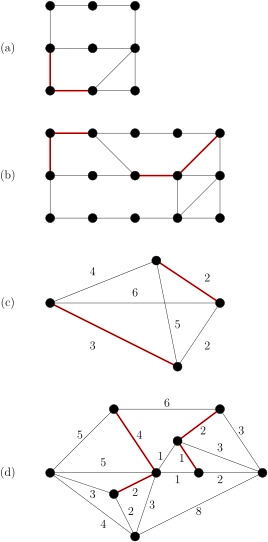
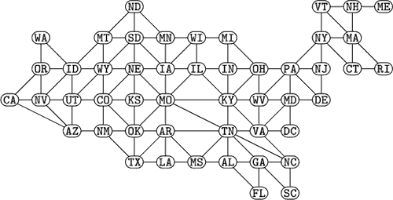

Chapter 14 Eulerian Graphs
Here are some basic definitions for a graph \(G=(V,E)\) with \(n\) vertices and \(m\) edges that we learned a while ago.
A walk is a sequence of vertices \(v_0, v_1, v_2, \ldots. v_k\) such that \(v_i v_{i+1} \in E\) for \(0 \leq i \leq k-1\text{.}\)
A trail is a walk with distinct edges (no repeated edges)
A path is a walk with distinct vertices (and hence distinct edges)
A circuit is a closed walk (meaning that \(v_0=v_k\text{,}\) we start and end at the same vertex)
A cycle is a circuit with distinct vertices (and hence distinct edges)
And here are the definitions that we need for today.
An Eulerian circuit is a circuit that contains every edge exactly once.
An Eulerian trail is a trail that contains every edge exactly once (but starts and ends at different vertices).
An Eulerian graph is a graph that has an Eulerian circuit.
Exercises Practice Problems
1. Eulerian Examples and Non-Examples.
Which if these graph have an Eulerian circuit? An Eulerian trail?
Solution.Neither
Eulerian Trail
Eulerian Circuit
Eulerian Trail
Eulerian Circuit
Neither
2. DIY Eulerian Properties.
Given what you have learned in the previous question, can you draw another graph that has an Eulerian circuit? An Eulerian trail? That has neither an Eulerian circuit or an Eulerian trail? Solution.
Here are the conclusions that we seems to draw from these examples:
\(G\) has an Eulerian Cycle \(\longleftrightarrow\) all vertices have even degree
\(G\) has an Eulerian Trail \(\longleftrightarrow\) exactly two vertices of odd degree
3. Graphs With an Eulerian Circuit.
Make a conjecture about what structural property guarantees that \(G\) has an Eulerian circuit. We will call this Property EC. Solution.
Property EC = every vertex has even degree
4. Graphs With an Eulerian Trail.
Make a conjecture about what structural property guarantees that \(G\) has an Eulerian trail. We will call this Property ET. Solution.
Property ET = exactly two vertices have odd degree
5. Using EC condition to prove ET condition.
Assume that your Property EC guarantees that a graph has an Eulerian circuit. (We will prove it below). Use that fact to prove that Property ET guarantees that a graph has an Eulerian trail. In other words, prove that
[ Property EC \(\rightarrow\) Eulerian circuit ] \(\rightarrow\) [ Property ET \(\rightarrow\) Eulerian trail ].
Hint: What small change could you make to a graph \(G\) with the ET property so that it becomes a graph \(H\) with the EC property? Solution.
Let \(G\) be a graph with exactly two vertices with odd degree. Add an edge \(e\) between these two vertices. Then \(G+e\) has an Eulerian circuit (by Property EC). Removing the edge \(e\) once more gives us an Eulerian trail in the original graph \(G\text{.}\)
6. Eulerian Circuit Implies EC condition holds.
Prove that if \(G\) has an Eulerian circuit then \(G\) has Property EC. Solution.
As we travel along the Eulerian circuit, every entrance is paired with an exit. So all vertices have even degree.
7. EC condition implies \(G\) has an Eulerian Circuit.
We need strong induction on \(m=|E|\) to give a rigorous proof that if \(G\) has Property EC then \(G\) has an Eulerian circuit. For now, brainstorm about how you might prove this by strong induction. Write down your strategy. Solution.
Let \(G\) be a connected graph vertices where every degree is even.
Base Case: \(G\) is a cycle, so \(m=n\text{.}\) Clearly a cycle is an Eulerian circuit.
Inductive Hypothesis: Assume that a connected graph \(G\) where every degree is even and \(|E| < m\) has an Eulerian cycle.
Inductive Step: Consider a graph \(G\) where every degree is even and \(|E|=m\text{.}\) Start at any vertex \(v\) and walk without repeating edges until you return to \(v\text{.}\) You cannot get stuck along the way since every vertex has even degree: if you enter a vertex then there must be an edge available to leave the vertex. Call this resulting circuit \(W\text{.}\) Now look at \(H=G-W\text{.}\) Every vertex of graph \(H\) has even degree, but it may have multiple components. Each component has fewer than \(m\) edges, so these components each have an Eulerian Circuit. We can splice these together along with the circuit \(W\) to create an Eulerian Circuit for \(G\text{.}\)
8. Guan's Postman Problem.
The Postman Problem is an example of a combinatorial optimization problem:
The Postman Problem: Given a connected (and possibly weighted) graph, find the shortest closed walk that covers every edge at least once.
In other words, you want to repeat the fewest number of (weighted) edges in a circuit that contains all the edges.
Find the shortest closed postman route for the following graphs. Indicate the edges that must be repeated.
Solution.Try to come up with a procedure for finding the shortest closed postman route of a graph. What are the "problem vertices?" How should we deal with them? Solution.
Find all of the vertices of odd degree. There must be an even number of them
Calculate the distances between each pair of odd degree vertices.
Find a perfect matching of these odd degree vertices that minimizes the total distance.
Double the edges in the graph that correspond to the paths connecting these pairs of odd degree vertices.
Try out your procedure on this graph which connects US states that share a border. How many "problem" vertices are there? How many edges do you need to add?
Solution.The states with odd degrees are (from left to right): CA, NV, UT, ND, TX, MO, LA, IL, KY, OH, WV, GA, MD, NC, VT, NY, NJ, DE, NH, MA, CT, ME. Observe that ND is at least 3 steps away from all the other odd degree vertices. We can pair it up with UT at a cost of 3, and we cannot do any better. So we can double the edges (ND, MT), (MT, ID), (ID, UT) (or we can pick another path of length 3 between ND and UT).
We can pair the remaining odd states with an odd neighboring state as follows: (CA, NV) (UT, ND) (MO, IL) (TX, LA) (VT, NY) (NJ, DE) (MA, CT) (NH, ME) (KY, OH) (WV, MD) (GA, NC) We must double a total of 14 edges to solve the Postman Problem.